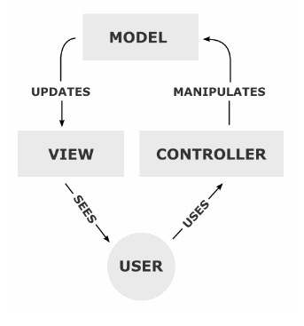

Model-View-Controller의 약자로 소프트웨어 설계와 관련된 디자인 패턴

모델은 데이터에 대한 정보를 가지고 있다. 데이터의 상태가 변경되면 모델을 일반적으로 뷰에게 알리며 가끔 컨트롤러에게 알리기도 한다.
뷰는 데이터를 보여주는 방식을 정의한다.
컨트롤러는 사용자로부터의 입력에 대한 응답으로 모델 또는 뷰를 업데이트하는 로직을 포함한다.